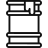
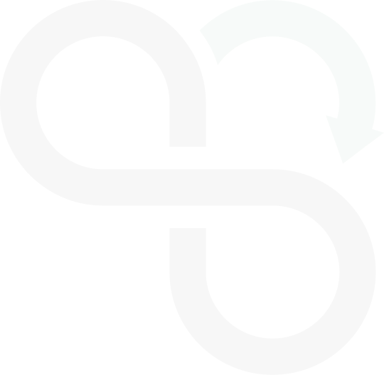
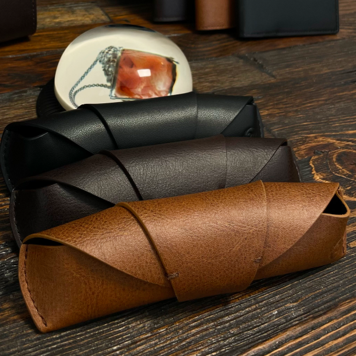
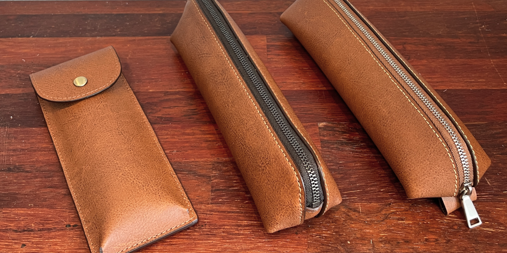
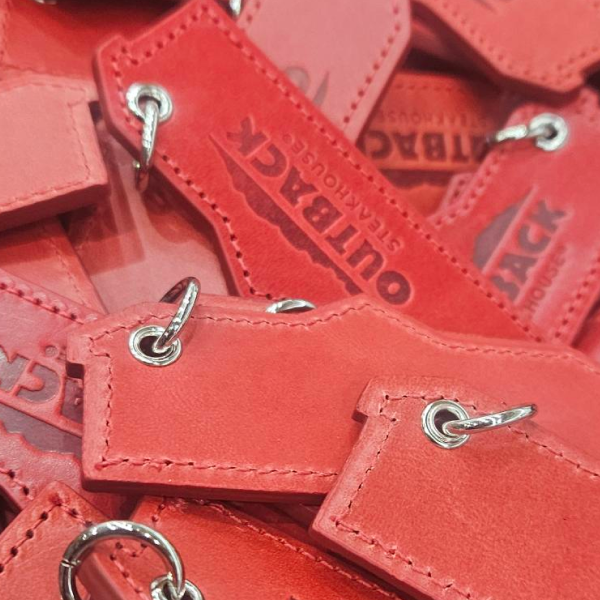

解決すべき問題
今日の皮革産業は深刻な環境問題を引き起こしています。
皮革産業の廃棄物問題
· 年間60万トンの廃棄物発生
化学薬品による環境汚染
· 製造過程で250種類の化学物質が使用されます。
· クロムやシアン化物などの発がん性物質が環境に放出されます。
 廃棄される食品副産物
廃棄される食品副産物
· 焼却過程でメタンガスが排出されます。
· 20%未満のリサイクル率（コーヒー副産物基準）

協業
BrownskinはLOTTE、GSRetail、KAKAO、MAISON21Gなどと協力し、様々な製品を供給しました。

GSRetail X MAISON 21G

KAKAO X JEJU

2024 KOREA - AFRICA SUMMIT

LOTTE

OUTBACK

TIMBERLAND
競合他社とは比較にならない再生皮革の機能性認証
Brownskinの再生皮革は抗菌性と消臭機能を備え、一般皮革よりも引張強度が1.5倍高いです。基準となる皮革の環境問題を解決しつつ、機能的に優れた製品を提供します。


1. 11種類の有害性に対する抗菌性、消臭性認証
スイスSGS有害性認証
2. 天然皮革に比べ120%高い引張強度
韓国靴皮革研究院 検証
3. 95%高資源循環素材
グローバル・リサイクルド・スタンダード認証
お問い合わせ

34-18, LS-ro 182beon-gil, Gunpo-si, Gyeonggi-do, Republick of Korea

(+82) 10-7607-2106